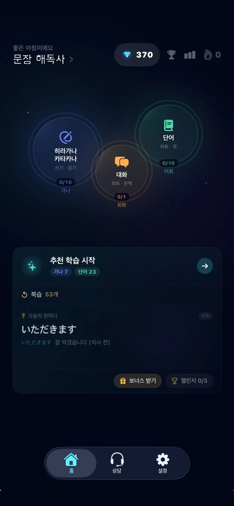
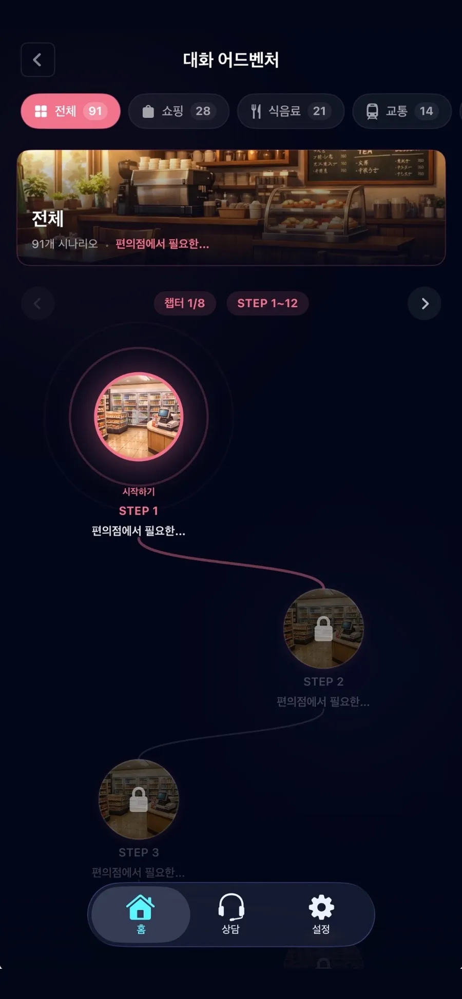

획순 채점
획순 가이드를 따라 쓰면 실시간으로 정확도를 채점해줘요.
히라가나 첫 글자부터 JLPT N5 단어, 상황별 회화까지. AI가 진도와 취약점을 분석해 매일 딱 맞는 학습을 띄워줍니다.
막막한 일본어를 게임의 스테이지처럼 쪼갰어요. 한 칸씩 깨면서 자연스럽게 다음 단계로 나아갑니다.
획순 가이드와 실시간 채점으로 히라가나·가타카나를 직접 써봐요.
JLPT N5 필수 단어를 간격 반복(SRS)으로 오래 기억해요.
카페·식당·교통 등 10가지 상황 대화를 어드벤처처럼 연습해요.
AI가 취약점을 분석해 오답 노트와 다음 학습을 추천해요.
획순 가이드를 따라 쓰면 실시간으로 정확도를 채점해줘요.
과학적 간격 반복으로 N5 단어를 잊을 때쯤 다시 만나요.
실제 상황 10가지를 골라 실전 대화 흐름을 익혀요.
진도와 오답을 분석해 매일 최적의 학습을 자동으로 짜줘요.

